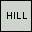
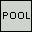

| Hill & Pool |
||
|---|---|---|
| Tile Properties/Attributes: Clear |
||
| 37 |  | Hill |
| 38 |  | Pool |
| No one seems to know what these two Tilez are, or how to use them ... if they have any use at all! In every graphics area, they are nothing more than grey boxes outlined in black, with their names in black. I have never seen either of these two Tilez in any Standard Level, nor in any (released) Custom Level. I doubt that I am alone in having used both of these Tilez in a 'work in progress' early in my experience in designing Custom Levelz, but never released with them still in it. Best advice: Don't use these Tilez! |
||